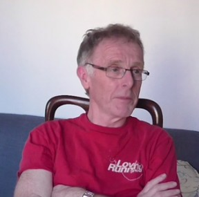

{kind=link}
“Life can only be understood backwards; but it must be lived forwards” Kierkegaard.
{kind=link}
A key aim of the cycle BOOM study is to understand how cycling in mid and later life relates to earlier experiences of cycling and the physical, social and cultural settings within which cycling took place (or did not take place) over time.
This is a point of departure from much existing research which has mainly focused on the here and now and the current factors that make cycling among the populace more likely. So a significant proportion of my time during the first phase of the project has been spent thinking about how we might capture people’s experiences of cycling through their life course.
One of the problems of this approach, however, is that recollections of cycling many decades earlier might challenge memory and be difficult to elicit, or at best might elicit inaccurate, or even exaggerated, accounts! This could leave us no wiser as to the reasons why one person has continued cycling into later life and someone else has not been near a bike for much of their adult life.
The cycle BOOM study will adopt a narrative approach in the form of life history interviews to try to overcome this difficulty. Through storied accounts of cycling over their lifetime, participants are allowed to develop their own order and meaning, and place this within the wider context of life events and transitions. That is, they are provided with anchor points to try to recollect their cycling history. To give an example, participants might explain how their cycling was affected by moving house, new relationships or transitioning into retirement. This situational approach, we hope, will provide a valuable insight into individuals’ recollection and reasoning of their engagement or withdrawal from cycling within the complexity of life events. The outcome of these interviews will be a series of ‘cycling life histories’ that can be used to explore patterns and variations. Ultimately, these will be used in the development of theory of how this relates to present-day practices. This will help develop a toolkit of policy recommendations on what could be done to allow people to maintain or engage with cycling through different periods of their life and into older age.
In the past few months Ben Spencer and I have been interviewing volunteers to work out how best to conduct these interviews. We have come up with a two stage process involving a pre-interview stage where participants fill in a grid with information on key aspects of their life and illustrate this with their past and current cycling. We then review this information to tailor our questions before going into the interview.
The role of space and place in shaping cycling is of particular interest to the cycle BOOM study and we want to try to capture the importance of this in interviews. To this end we will use projective techniques to enable participants to talk about the physical and social settings within which cycling did (or did not) take place. Google Street View allows the participant to demonstrate places they used to inhabit. The pilot interviews have shown that this enlivens stories about how bikes were stored; levels of, and interaction with, traffic on streets; and strategies for overcoming obstacles and dealing with traffic infrastructure. We have also been developing ways of exploring ageing and cycling in terms of how changes in physical and mental capacities over time influence the capacity to cycle.
Overall, time and energy conducting pilot interviews over the last few months has been well spent. It has allowed Ben and I to test and appreciate which approach and which questions work best – and we have learned a lot just by making innocent mistakes in how not to frame those questions! We have also conducted extensive training sessions with other Research Assistants on the project. They are now well versed and equipped to go out and do their own interviews. Indeed, we are all looking forward to recruiting our participants, meeting them and listening to their fascinating cycling life histories!
Click here for a video clip from a pilot interview in Bristol, March 2014 (Running Time 2mins; File size 250mb)
Heather Jones is a Research Assistant on the cycle BOOM research project at the University of the West of England (UWE). Contact her at heather6.jones@uwe.ac.uk
Leave a Reply